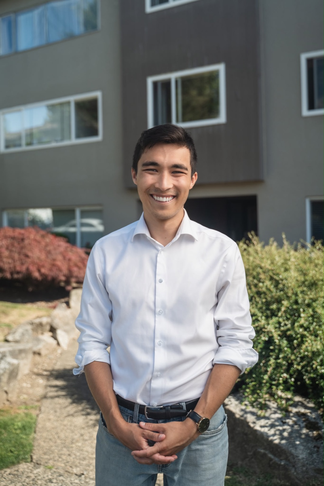

Why I'm Running
A letter to the people of North Vancouver — on what I believe, what I've seen, and why this moment matters.
To the residents of North Vancouver —
We've made progress over the last few years — the revitalized Harry Jerome community centre, the thriving Shipyards district, and the R2 bus rapid transit extension. But on the big issues, our community is falling behind.
Traffic is getting worse. Housing is getting more expensive. And taxpayers are on the hook for billions in cost overruns on a wastewater treatment project.
North Vancouver may be the most liveable city in Canada. But that title doesn't mean much if you're stuck in traffic on your way to a home you can't afford.
The generation before us built not one, but two bridges, BC's first aerial tramway, and one of the largest shipyards in Canada. We have the brains, the workers, and the ambition to build a better city. But it feels like we've given up on trying to solve those big issues.
A culture of complacency has taken root at city hall and across governments — the strange idea that we are powerless to build a new bridge or prevent cost overruns on a wastewater treatment plant being built in our own city.
We can replace the culture of complacency with the culture of results. We just need to be bold enough to demand it.
A new voice in city hall could change this — a voice that not only understands the problems our city faces, but one that lives them every day.
That's why I'm running for city council.
I'll fight to deliver Bus Rapid Transit and the Second Narrows Bridge so you can get where you're going.
I'll support affordable housing and childcare, so the next generation can afford to raise their families here.
And I'll demand accountability for the wastewater treatment plant disaster, because you aren't responsible for someone else's mistakes.
My parents moved here on two working class salaries because North Vancouver was affordable and convenient. That's the promise of a liveable city.
The question isn't whether we can make it a reality. It's whether we have the courage to start.
It's our city, it's our future. Let's own it.
With real respect and genuine commitment,

Three reasons Liam is running.
To make local government feel local again.
City hall should be close to the people it serves. Liam believes in accessible, transparent governance where residents have a genuine voice — not just a public comment slot.
To put practical experience to work for North Van.
Years of public policy work and community organizing aren't just background — they're the reason Liam can hit the ground running, understand the system, and get things done.
To fight for a North Vancouver that works for everyone.
North Van's future depends on it remaining a place where people of different incomes, ages, and backgrounds can build a life. That takes active, committed leadership — and Liam is ready to provide it.
Ready to get behind this campaign?
Join neighbours who believe North Vancouver deserves a city council that listens and delivers.